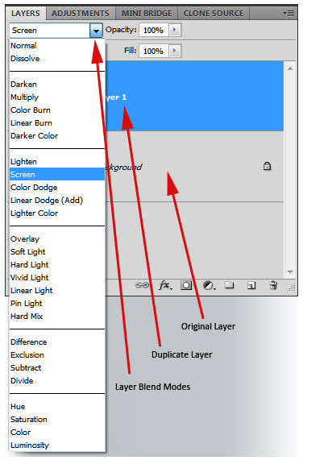

class: front-page # CSS3 blend-modes <p id="front-blending"> <span>b</span> <span>l</span> <span>e</span> <span>n</span> <span>d</span> <span>-</span> <span>m</span> <span>o</span> <span>d</span> <span>e</span> </h1> --- class: agenda # Agenda * Hva er det? * Hvordan funker det? * Eksempler * Browserstøtte * The future --- class: center middle # Hva er det? ??? Fordi som har vært borti photoshop tidligere... --- class: cols two # Hva er det? .col[ * The power of photoshop in the browser ] .col[  ] --- # Hva er det? * The power of photoshop in the browser * To (tre, kanskje fire?) nye CSS-properties ??? * men for oss blir det i realiteten to/tre nye css props * Hvorfor: Tidligere versjoner av CSS hadde kun "Simple Alpha Compositing", * Porter Duff source-over operator (kommer tilbake til de folka) ```javascript EXX = Element color/alpha value CXX = Canvaas color/alpha value (before blending) CXX' = Canvaas color/alpha value (after blending) Ca' = 1 - (1 - Ea) * (1 - Ca) Cr' = (1 - Ea) * Cr + Er Cg' = (1 - Ea) * Cg + Eg Cb' = (1 - Ea) * Cb + Eb ``` --- # Hva er det? * The power of photoshop in the browser * To (tre, kanskje fire?) nye CSS-properties ```css background-blend-mode: <blend-mode>{1,} ``` ```html blend-mode: normal | multiply | screen | overlay | darken | lighten color-dodge | color-burn | hard-light | soft-light | difference exclusion | hue | saturation | color | luminosity ``` ??? * Blending av background elemenenter, kan ta flere verdier. Vil repeate/truncate hvis antall background er ulik antall blend-modes * Først working-draft hos W3C 16. aug 2012, og sist oppdatert 13. January 2015 --- # Hva er det? * The power of photoshop in the browser * To (tre, kanskje fire?) nye CSS-properties ```css background-blend-mode: <blend-mode>{1,} ``` ```html blend-mode: normal | multiply | screen | overlay | darken | lighten color-dodge | color-burn | hard-light | soft-light | difference exclusion | hue | saturation | color | luminosity ``` ```css mix-blend-mode: <blend-mode>{1} ``` ??? * I tillegg får vi `mix-blend-mode` som kun tar en verdi * Beskriver hvordan innholdet av elementet skal blendes med elementer "under" og dens bakgrunnfarge. * Samme mulige `blend-modes` er gyldige. * Både `background-blend-mode` og `mix-blend-mode` har i tillegg noen globale verdige `inital`, `inherit` og `unset` --- # Hva er det? * The power of photoshop in the browser * To (tre, kanskje fire?) nye CSS-properties ```css background-blend-mode: <blend-mode>{1,} ``` ```html blend-mode: normal | multiply | screen | overlay | darken | lighten color-dodge | color-burn | hard-light | soft-light | difference exclusion | hue | saturation | color | luminosity ``` ```css mix-blend-mode: <blend-mode>{1} ``` ```css isolation: auto | isolate ``` ??? * Skrev tre i parente, da `isolation` er den minst kjente og brukte av de. * Lager en ny stacking-context for blending * Dette kan brukes for å hindre blending med bakgrunner du ikke er interessert i. --- class: center middle # Hvorfan funker det? ??? * Kommer til å gå igjennom litt teori, de mest vanlige blend-modes, og vise noen eksempler av hva de gjør. --- class: cols two # Hvordan funker det? .col[ Backdrop-kalkulering ] .col[ <img src="https://www.w3.org/TR/compositing-1/examples/simple_backdrop.svg" alt="Backdrop kalkulering" class="w3c-svg" /> ] ??? * Finner ut hvilke deler av elementet som må undersøkes ved compositing av ett element. * Her kommer også `isolation` inn da den kan være med på å begrense hva som regnes som backdrop. --- class: cols two # Hvordan funker det? .col[ Backdrop-kalkulering ] .col[ <img src="https://www.w3.org/TR/compositing-1/examples/simple_backdrop.svg" alt="Backdrop kalkulering" class="w3c-svg" /> ] .col[ Blending ] .col[ $$Cm = B(Cb, Cs)$$ ] ??? * Cm: the result color after blending * B: the formula that does the blending * Cb: the backdrop color * Cs: the source color --- class: cols two # Hvordan funker det? .col[ Backdrop-kalkulering ] .col[ <img src="https://www.w3.org/TR/compositing-1/examples/simple_backdrop.svg" alt="Backdrop kalkulering" class="w3c-svg" /> ] .col[ Blending ] .col[ $$Cm = B(Cb, Cs)$$ ] .col[ Med-regnet alpha-kanalen ] .col[ $$Cm = (1 - αb) Cs + αb B(Cb, Cs)$$ ] ??? * Cr: the result color * B: the formula that does the blending * Cs: the source color * Cb: the backdrop color * αb: the backdrop alpha * --- * This example has a red rectangle with a blending mode that is placed on top of a set of green rectangles that have different levels of opacity. * Note how the top rectangle shifts more toward red as the opacity of the backdrop gets smaller. --- class: cols two # Hvordan funker det? .col[ Backdrop-kalkulering ] .col[ <img src="https://www.w3.org/TR/compositing-1/examples/simple_backdrop.svg" alt="Backdrop kalkulering" class="w3c-svg" /> ] .col[ Blending ] .col[ $$Cm = B(Cb, Cs)$$ ] .col[ Med-regnet alpha-kanalen ] .col[ $$Cm = (1 - αb) \cdot Cs + αb \cdot B(Cb, Cs)$$ ] .col[ Egentlig ende større, men ] .col[ <a href="https://www.w3.org/TR/compositing-1/#blending" target="_blank">Se W3C blend-modes</a> ] --- class: cols three # Hvordan funker det? .col[ Normal ] .col[ $$B(Cb, Cs) = Cs$$ ] .col[ <img src="https://www.w3.org/TR/compositing-1/examples/normal.png" /> ] .col[ Multiply ] .col[ $$B(Cb, Cs) = Cb \cdot Cs$$ ] .col[ <img src="https://www.w3.org/TR/compositing-1/examples/multiply.png" /> ] --- #Hvordan funker det? ## Multiply JS eksempel, uten alpha ```javascript tintR = source[0]; tintG = source[1]; tintB = source[2]; for (i = 0; i < iLen; i += 4) { r = data[i]; g = data[i + 1]; b = data[i + 2]; // alpha compositing data[i] = (tintR * r) / 255; data[i + 1] = (tintG * g) / 255; data[i + 2] = (tintB * b) / 255; } ``` --- class: split # Hvordan funker det? Hva man kan gjøre... <button class="grad-off">On/Off</button><button class="grad-showoff">Show</button> <select class="blend-select"> <option>multiply</option> <option>screen</option> <option>overlay</option> <option>darken</option> <option>lighten</option> <option>color-dodge</option> <option>color-burn</option> <option>hard-light</option> <option>soft-light</option> <option>difference</option> <option>exclusion</option> <option>hue</option> <option>saturation</option> <option>color</option> <option>luminosity</option> </select> .blend-eqs[ .blend-eq.b-multiply[$$B(Cb, Cs) = Cb \cdot Cs$$] .blend-eq.b-screen[$$B(Cb, Cs) = Cb + Cs -(Cb \cdot Cs)$$] .blend-eq.b-overlay[$$B(Cb, Cs) = HardLight(Cs, Cb)$$] .blend-eq.b-darken[$$B(Cb, Cs) = min(Cb, Cs)$$] .blend-eq.b-lighten[$$B(Cb, Cs) = max(Cb, Cs)$$] .blend-eq.b-color-dodge[ ```javascript if(Cb == 0) B(Cb, Cs) = 0 else if(Cs == 1) B(Cb, Cs) = 1 else B(Cb, Cs) = min(1, Cb / (1 - Cs)) ``` ] .blend-eq.b-color-burn[ ```javascript if(Cb == 1) B(Cb, Cs) = 1 else if(Cs == 0) B(Cb, Cs) = 0 else B(Cb, Cs) = 1 - min(1, (1 - Cb) / Cs) ``` ] .blend-eq.b-hard-light[ ```javascript if(Cs <= 0.5) B(Cb, Cs) = Multiply(Cb, 2 x Cs) else B(Cb, Cs) = Screen(Cb, 2 x Cs -1) ``` ] .blend-eq.b-soft-light[ ```javascript if(Cs <= 0.5) B(Cb, Cs) = Cb - (1 - 2 x Cs) x Cb x (1 - Cb) else B(Cb, Cs) = Cb + (2 x Cs - 1) x (D(Cb) - Cb) function D(Cb) { if(Cb <= 0.25) D(Cb) = ((16 * Cb - 12) x Cb + 4) x Cb else D(Cb) = sqrt(Cb) } ``` ] .blend-eq.b-difference[$$B(Cb, Cs) = | Cb - Cs |$$] .blend-eq.b-exclusion[$$B(Cb, Cs) = Cb + Cs - 2 \cdot Cb \cdot Cs$$] .blend-eq.b-hue[https://www.w3.org/TR/compositing-1/#blendingnonseparable] .blend-eq.b-saturation[https://www.w3.org/TR/compositing-1/#blendingnonseparable] .blend-eq.b-color[https://www.w3.org/TR/compositing-1/#blendingnonseparable] .blend-eq.b-luminosity[https://www.w3.org/TR/compositing-1/#blendingnonseparable] ] <div class="blend-ex multiply"></div> --- background-image: url(https://sarasoueidan.com/images/mix-blend-mode-example-1.png) # Eksempel --- background-image: url(https://sarasoueidan.com/images/mix-blend-mode-example-2.png) # Eksempel --- class: center middle # The future <h2 class="hidden">alpha-compositing og Porter Duff</h2> ??? * Helt i starten nevnte jeg at det var to (tre, kanskje fire?) nye css-props --- class: center middle #The future <h2>alpha-compositing og Porter Duff</h2> ??? * I W3C sin draft nevnes Thomas Porter og Tom Duff sin artikkel "Compositing digital images" nokså mye, og det refereses mye til Porter Duff operatorer allerede i introen i draften. * Slik det er i dag så må man laste ned en spesiell versjon av chromium for å se på det. Men vi er da bleeding-edge * http://ssp.impulsetrain.com/porterduff.html * http://adobe.github.io/web-platform/demos/compositing/ --- #Lenker * https://developer.mozilla.org/en-US/docs/Web/CSS/background-blend-mode * https://developer.mozilla.org/en-US/docs/Web/CSS/mix-blend-mode * https://developer.mozilla.org/en-US/docs/Web/CSS/blend-mode * https://developer.mozilla.org/en-US/docs/Web/CSS/isolation * https://www.w3.org/TR/compositing-1/ * https://sarasoueidan.com/blog/compositing-and-blending-in-css/ * http://ssp.impulsetrain.com/porterduff.html * http://adobe.github.io/web-platform/demos/compositing/